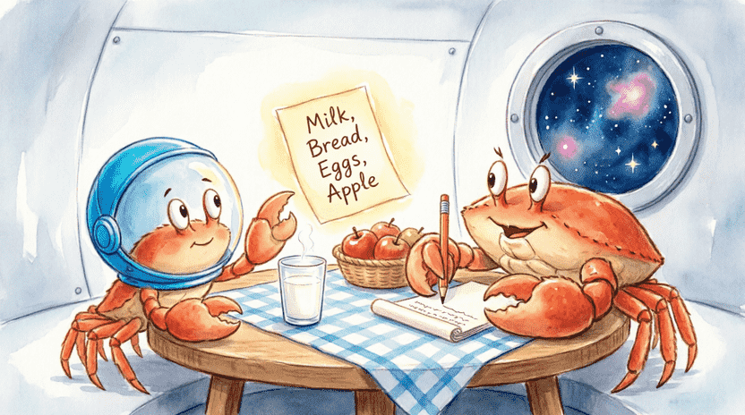
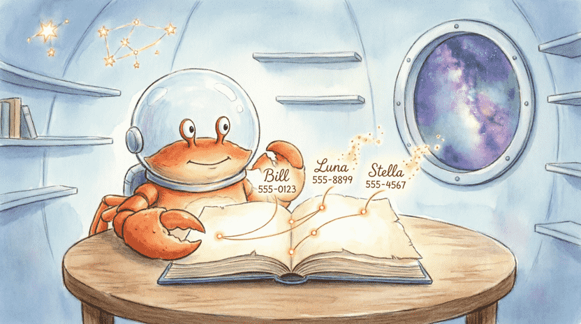
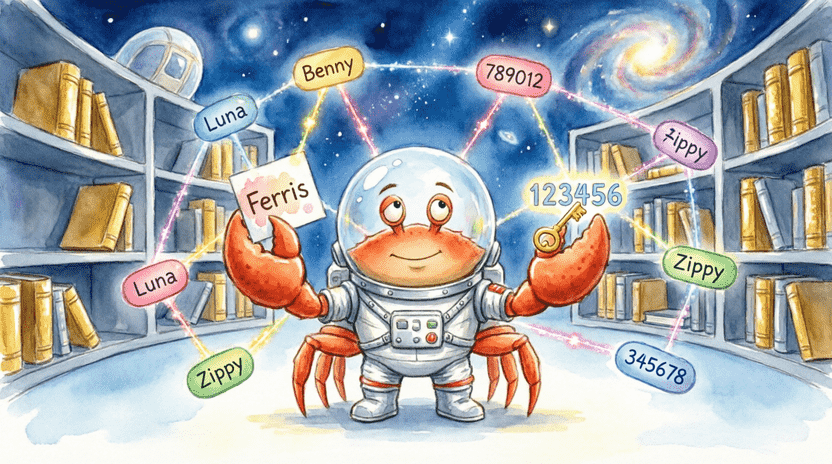
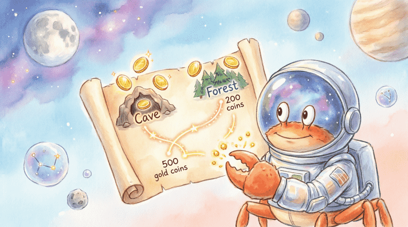

🦀 The Land of Rust: Ferris the Crab’s Space Adventures
Chapter 8: Magic Boxes That Grow and Shrink (Collections)
📋 Chapter Outline:
8.1. Mom’s Shopping List (Vector)
8.1.1. The Story: Ferris’s Shopping Trip
Before going to the space market, Ferris’s mom always grabs a piece of paper and writes down what they need: "Milk, Bread, Eggs, Apple". 🛒 As they walk through the aisles, she might suddenly remember: “Oh! We need cheese too!” and quickly adds it to the bottom of the list. When they pick something up, she crosses it off.
In programming, we often need exactly this kind of smart list: one that can grow and shrink as we go. Remember arrays ([]) from Chapter 3? Their size is fixed once created. But a Vector is exactly our magical shopping list! 🦀✨

8.1.2. Introducing Vec<T>
Vec<T> is a smart box that can hold many items of the same type (T) in a row. That T can be anything: numbers, text, or even structs we built ourselves! The best thing about vectors is that their size isn’t fixed. You can add or remove items anytime.
8.1.3. Creating a Vector
There are two main ways to create a vector:
#![allow(unused)]
fn main() {
// Method 1: Create an empty vector (we must specify the type)
let mut shopping_list: Vec<String> = Vec::new();
// Method 2: Create with initial values (quick and easy with the vec! macro)
let mut shopping_list = vec![
"Milk".to_string(),
"Bread".to_string(),
];
}The vec! macro is super handy. Just put your values separated by commas inside [].
8.1.4. Adding Items with push
To add a new item to the end of the vector, we use the push method:
#![allow(unused)]
fn main() {
shopping_list.push("Eggs".to_string());
shopping_list.push("Apple".to_string());
}Now our vector has four items: Milk, Bread, Eggs, Apple. 🥚🍎
8.1.5. Removing the Last Item with pop
If we change our mind and don’t want the apple anymore, we can use pop to take the last item out. Important note: pop returns an Option<T>! If the vector isn’t empty, it gives Some(last_item). If it is empty, it gives None. This way, the program never crashes!
#![allow(unused)]
fn main() {
let last_item = shopping_list.pop();
match last_item {
Some(item) => println!("Removed: {}", item),
None => println!("The list was already empty!"),
}
}8.1.6. Accessing Elements (Index vs get)
To read a specific item by its number (index starts at 0), we have two ways:
🔹 Fast but risky []:
#![allow(unused)]
fn main() {
let second = &shopping_list[1]; // "Bread"
// let bad = &shopping_list[10]; // ❌ If index doesn't exist, the program panics!
}🔹 Safe and recommended get: This method returns an Option<&T>. If the index exists, it gives Some, otherwise None.
#![allow(unused)]
fn main() {
match shopping_list.get(1) {
Some(item) => println!("Second item: {}", item),
None => println!("This index doesn't exist!"),
}
}💡 Safety Tip: Always try to use get when you’re not 100% sure the index is valid.
8.1.7. Looping Over a Vector
To visit every item in the vector one by one, we use a for loop:
#![allow(unused)]
fn main() {
// Read-only (immutable reference)
for item in &shopping_list {
println!("- {}", item);
}
// If you want to change the items inside, use &mut
for item in &mut shopping_list {
item.push_str("!"); // Adds an exclamation mark to each item
}
}8.1.8. Exercise: Sum & Average
Create a vector of integers (i32) and calculate their sum and average.
💡 Sample Answer:
fn main() {
let numbers = vec![10, 20, 30, 40, 50];
// Professional & fast way
let sum: i32 = numbers.iter().sum();
let count = numbers.len();
let average = sum as f64 / count as f64;
println!("Sum: {}", sum);
println!("Average: {:.2}", average); // Two decimal places
}![[Illustration: A cartoon vector visualized as a train of glowing train cars. Each car holds a different item (Milk, Bread, Eggs, Apple). A crab is pushing a new car “Cheese” onto the end, and another crab is popping off the last car. Style: playful, educational, bright colors, 16:9.]](assets/images/8.2.png)
8.2. The Secret Address Book (HashMap)
8.2.1. The Story: Ferris’s Contact Book
Ferris has many friends across the galaxy: Bill, Luna, Stella… 🌌 He keeps a magical notebook. Whenever he opens it to a friend’s name, their space phone number magically appears. In this book, every name is connected to a number. In programming, we call this a Map. In Rust, it’s called HashMap.

8.2.2. Introducing HashMap<K, V>
HashMap<K, V> is a smart box that connects a Key (K) to a Value (V). Its superpower is speed: finding a value by its key is incredibly fast, even if we have millions of entries!
Before using it, we must bring it into our code from the standard library:
#![allow(unused)]
fn main() {
use std::collections::HashMap;
}8.2.3. Creating a HashMap
#![allow(unused)]
fn main() {
let mut phone_book = HashMap::new();
}We can also create one with initial data (using vec and collect):
#![allow(unused)]
fn main() {
let data = vec![("Ferris", "12345"), ("Bill", "67890")];
let phone_book: HashMap<_, _> = data.into_iter().collect();
}8.2.4. Insert & Update (insert)
With insert, we add a key-value pair. If the key already exists, it updates the value:
#![allow(unused)]
fn main() {
phone_book.insert(String::from("Ferris"), String::from("123456"));
phone_book.insert(String::from("Bill"), String::from("789101"));
}8.2.5. Getting a Value (get)
To find a phone number, we use get, which returns Option<&V> (because the person might not be in the book):
#![allow(unused)]
fn main() {
let name = "Ferris";
match phone_book.get(name) {
Some(number) => println!("Number for {}: {}", name, number),
None => println!("{} is not in the book!", name),
}
}8.2.6. Checking for a Key (contains_key)
If you just want to know if a key exists without reading its value:
#![allow(unused)]
fn main() {
if phone_book.contains_key("Ferris") {
println!("Ferris is in the book. ✅");
}
}8.2.7. Removing with remove
remove deletes a key and its value. It returns Option<V> (the removed value, if it existed):
#![allow(unused)]
fn main() {
let removed = phone_book.remove("Bill");
if removed.is_some() {
println!("Bill was removed from the book. 🗑️");
}
}8.2.8. Conditional Update with entry & or_insert
Sometimes we want to say: “If the key doesn’t exist, put a default value, then give me a way to change it.” We use entry and or_insert for this. It’s perfect for counting:
#![allow(unused)]
fn main() {
// If "Stella" doesn't exist, insert "0000" and give us a mutable handle to it
let count = phone_book.entry("Stella").or_insert(String::from("0000"));
// Now `count` is a `&mut String` we can modify
}8.2.9. Looping Over a HashMap
#![allow(unused)]
fn main() {
for (key, value) in &phone_book {
println!("{} -> {}", key, value);
}
}📌 Note: HashMap does not guarantee order! It’s like a magic bag where items might come out in a different sequence each time. But don’t worry, finding them is always fast.
8.2.10. Exercise: Word Counter
Write a program that takes a sentence from the user and counts how many times each word appears using a HashMap.
💡 Sample Answer:
use std::collections::HashMap;
use std::io;
fn main() {
println!("Write a sentence:");
let mut text = String::new();
io::stdin().read_line(&mut text).expect("Failed to read");
let mut counts = HashMap::new();
// Split the sentence by whitespace
for word in text.split_whitespace() {
let count = counts.entry(word).or_insert(0);
*count += 1; // The `*` means: change the actual number inside the reference (since `count` is a `&mut i32`)
}
println!("\nWord frequencies:");
for (word, count) in &counts {
println!("{}: {}", word, count);
}
}
8.3. Story: Collecting RPG Items
Let’s build a mini adventure together! Ferris explores an unknown planet and collects items. 🗺️💎
8.3.1. Defining struct Item
#![allow(unused)]
fn main() {
#[derive(Debug)] // This line lets us easily print the items
struct Item {
name: String,
value: u32, // Value in coins
}
}8.3.2. Item Bag (Vec<Item>)
#![allow(unused)]
fn main() {
let mut inventory: Vec<Item> = Vec::new();
inventory.push(Item { name: String::from("Wooden Sword"), value: 10 });
inventory.push(Item { name: String::from("Health Potion"), value: 25 });
}8.3.3. Treasure Map (HashMap<String, u32>)
A map of different locations and how much treasure is hidden there:
#![allow(unused)]
fn main() {
let mut treasure_map = HashMap::new();
treasure_map.insert(String::from("Dark Cave"), 500);
treasure_map.insert(String::from("Misty Forest"), 200);
treasure_map.insert(String::from("Snowy Peak"), 1000);
}8.3.4. Helper Functions
#![allow(unused)]
fn main() {
fn add_item(inventory: &mut Vec<Item>, item: Item) {
println!("✅ Added '{}' to the bag.", item.name);
inventory.push(item);
}
fn show_inventory(inventory: &Vec<Item>) {
if inventory.is_empty() {
println!("The bag is empty! 😢");
} else {
println!("🎒 Your inventory:");
for item in inventory {
println!(" - {} (Value: {} coins)", item.name, item.value);
}
}
}
fn search_treasure(map: &HashMap<String, u32>, place: &str) -> Option<u32> {
map.get(place).copied() // `.copied()` turns `&u32` into `u32` (copies the number)
}
}8.3.5. Interactive Story
fn main() {
let mut inventory = Vec::new();
let mut treasure_map = HashMap::new();
treasure_map.insert(String::from("Cave"), 500);
treasure_map.insert(String::from("Forest"), 200);
add_item(&mut inventory, Item { name: String::from("Rusty Key"), value: 5 });
add_item(&mut inventory, Item { name: String::from("Old Map"), value: 50 });
show_inventory(&inventory);
let place = "Cave";
match search_treasure(&treasure_map, place) {
Some(gold) => println!("🎉 Hooray! You found {} coins in {}!", gold, place),
None => println!("❌ No treasure found in {}.", place),
}
}![[Illustration: A cartoon RPG game scene. Ferris stands in front of a treasure chest with a map in hand. A vector backpack is on his back with item slots (Wooden Sword, Health Potion). A glowing map table shows locations: Dark Cave, Misty Forest, Snowy Peak. Style: fantasy children’s book illustration, adventurous, bright, 16:9.]](assets/images/8.5.png)
8.4. Performance & Choosing the Right Tool
8.4.1. When to Use a Vector?
✅ When order matters (e.g., a queue or to-do list). ✅ When you need to access items by index (number). ✅ When you mostly add to or remove from the end.
8.4.2. When to Use a HashMap?
✅ When you want fast lookup using a key (like a name or ID). ✅ When order doesn’t matter. ✅ When each key has exactly one value (e.g., a phone number for a person).
8.4.3. Introducing HashSet (No Values)
Sometimes we just want a collection of unique items (like a guest list for a party). HashSet<T> is exactly like a HashMap, but without values! It automatically prevents duplicates.
#![allow(unused)]
fn main() {
use std::collections::HashSet;
let mut names = HashSet::new();
names.insert("Ferris");
names.insert("Bill");
names.insert("Ferris"); // Duplicate, won't be added!
println!("Number of guests: {}", names.len()); // 2
}8.4.4. Exercise: Intersection of Two Lists
You have two vectors: [1, 2, 3, 4, 5] and [4, 5, 6, 7, 8]. Find the common numbers using HashSet.
💡 Sample Answer:
use std::collections::HashSet;
fn main() {
let a = vec![1, 2, 3, 4, 5];
let b = vec![4, 5, 6, 7, 8];
let set_a: HashSet<_> = a.into_iter().collect();
let set_b: HashSet<_> = b.into_iter().collect();
let common: Vec<_> = set_a.intersection(&set_b).collect();
println!("Common numbers: {:?}", common); // [4, 5]
}![[Illustration: Two overlapping magical circles labeled “List A” and “List B”. In the intersection, glowing numbers “4” and “5” float with sparkles. Ferris the crab stands nearby holding a magnifying glass. Style: educational vector illustration, clean, bright.]](assets/images/8.6.png)
8.5. Project: Interactive Phonebook
Let’s combine everything into a complete terminal-based phonebook project! 📞
8.5.1. Main Menu
use std::collections::HashMap;
use std::io;
fn main() {
let mut phone_book: HashMap<String, String> = HashMap::new();
loop {
println!("\n📞 Ferris's Phonebook 📞");
println!("1. Add new contact");
println!("2. Search number");
println!("3. Delete contact");
println!("4. Show all contacts");
println!("5. Exit");
let mut choice = String::new();
io::stdin().read_line(&mut choice).unwrap();
match choice.trim() {
"1" => add_contact(&mut phone_book),
"2" => search_contact(&phone_book),
"3" => delete_contact(&mut phone_book),
"4" => show_all(&phone_book),
"5" => {
println!("Goodbye! 👋");
break;
}
_ => println!("Invalid number! Try again."),
}
}
}8.5.2. Add Contact
#![allow(unused)]
fn main() {
fn add_contact(book: &mut HashMap<String, String>) {
println!("Enter contact name:");
let mut name = String::new();
io::stdin().read_line(&mut name).unwrap();
let name = name.trim().to_string();
println!("Enter phone number:");
let mut number = String::new();
io::stdin().read_line(&mut number).unwrap();
let number = number.trim().to_string();
book.insert(name, number);
println!("✅ Contact added.");
}
}8.5.3. Search Contact
#![allow(unused)]
fn main() {
fn search_contact(book: &HashMap<String, String>) {
println!("Enter name to search:");
let mut name = String::new();
io::stdin().read_line(&mut name).unwrap();
let name = name.trim();
match book.get(name) {
Some(number) => println!("📞 {}: {}", name, number),
None => println!("❌ {} is not in the book.", name),
}
}
}8.5.4. Delete Contact
#![allow(unused)]
fn main() {
fn delete_contact(book: &mut HashMap<String, String>) {
println!("Enter name to delete:");
let mut name = String::new();
io::stdin().read_line(&mut name).unwrap();
let name = name.trim();
if book.remove(name).is_some() {
println!("✅ {} was deleted.", name);
} else {
println!("❌ {} does not exist.", name);
}
}
}8.5.5. Show All
#![allow(unused)]
fn main() {
fn show_all(book: &HashMap<String, String>) {
if book.is_empty() {
println!("📭 The phonebook is empty.");
} else {
println!("📋 Contacts:");
for (name, number) in book {
println!(" {} : {}", name, number);
}
}
}
}
8.6. Summary & Challenge
8.6.1. What You Learned
In this chapter, you discovered:
✅ Vec<T>: A resizable list. (push, pop, get, [], for loops)
✅ HashMap<K, V>: Key-to-value mapping. (insert, get, entry().or_insert(), remove)
✅ HashSet<T>: A collection with no duplicates.
✅ The difference between safe access (get) and fast access ([]).
8.6.2. Challenge: Student Grades System
Write a program that takes a student’s name and their grade. You can enter multiple grades for the same student. At the end, print the average grade for each student.
💡 Hint: Use HashMap<String, Vec<f64>>. When a new name appears, use entry and or_insert_with(Vec::new) to create an empty vector, then push the grade.
💡 Sample Answer:
use std::collections::HashMap;
use std::io;
fn main() {
let mut grades: HashMap<String, Vec<f64>> = HashMap::new();
loop {
println!("Enter student name (or 'exit' to finish):");
let mut name = String::new();
io::stdin().read_line(&mut name).unwrap();
let name = name.trim().to_string();
if name == "exit" { break; }
println!("Enter grade:");
let mut grade_str = String::new();
io::stdin().read_line(&mut grade_str).unwrap();
let grade: f64 = grade_str.trim().parse().expect("Please enter a valid number");
grades.entry(name).or_insert_with(Vec::new).push(grade);
}
println!("\n📊 --- Average Grades ---");
for (name, scores) in &grades {
let sum: f64 = scores.iter().sum();
let avg = sum / scores.len() as f64;
println!("{}: {:.2}", name, avg);
}
}Now you know how to use vectors and hash maps to store dynamic, real-world data! 🎒📦 In the next chapter, we’ll dive into Error Handling: learning how to prevent crashes and manage mistakes like a true programming hero! 🛡️🦀
![[Illustration: Ferris wearing a graduation cap, holding a glowing “Chapter 8 Master” badge. Floating around him are colorful Vectors, HashMaps, and Set symbols transforming into a neat digital backpack. Style: encouraging, vibrant children’s book illustration.]](assets/images/8.8.png)